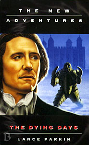

|
The Dying Days
|
BASIC PLOT DOCTOR COMPANIONS Brigadier Alistair Gordon Lethbridge-Stewart MATERIALISATION CIRCUIT Pg 36 Trafalgar Square, outside the British National Space Museum, around 9.00 in the morning on the same day. Pg 293 Garland College, University of Dellah, 8th May 2593. PREPARATORY READING CONTINUITY REFERENCES "Kadiatu had told Benny that they couldn't stay long without violating the non-aggression treaty between the People and the Time Lords." The Also People. "They didn't turn heads at Mrs Darling's little corner shop, even when they tried to pay for a trolleyful of food with a single five-pound coin." A version of British currency mentioned in Battlefield which still, 20 years later, has yet to come into existence. Pg 2 Reference to Jason, who we first met in Death and Diplomacy and whom Benny divorced in the wake of the events in Eternity Weeps. Pg 3 "Coming live from the National Space Museum" which once displayed the remains of a Nestene Energy Unit in Terror of the Autons. "It is over twenty years since the first missions to the Red Planet." The last UK-based mission to Mars was in The Ambassadors of Death. Pg 4 "The first thing she found was the Daily Mirror, which she still hadn't got around to cancelling." Presumably it was being delivered to Allen Road because Ace liked to read it, as we saw in Silver Nemesis. Pg 5 "Reading the contents of the envelope, she was rather shocked to find that it offered her the chair of archaeology at St Oscar's University on the planet Dellah." This sets up the scene for the new Benny-centric NAs, and we first see St Oscar's in Oh No It Isn't!. Pg 8 "Sorry I'm late. You wouldn't believe the state of the traffic around the Horsehead Nebula." There are loads of mentions of this in the new series, specifically the note that the Ood-Sphere and Sense-Sphere are located near here in Planet of the Ood. "We were alone in your tent, on a planet called Heaven. The Hoothi had been destroyed." The Doctor proving who he is calls back to Benny's first appearance in Love and War. Pg 9 "'Where's Chris?' 'Gallifrey.'" Where he remained after Lungbarrow. Pg 11 More references to Heaven from Love and War, as well as name-checking Ace and Dorothee, who are the same person. But you knew that. Pg 22 "It was someone's room, though, a teenager's judging by the model aeroplane hanging over the window. There was a glass ashtray on the windowsill." Chris's room, and the ashtray possibly belonged to Roz. Pg 23 "MY FRIEND WENT TO SAN FRANCISCO AND ALL HE GOT ME WAS THIS LOUSY T-SHIRT." The telemovie. "IT'S PRONOUNCED 'CWEJ'" Chris again. Pg 26 "Last year there was that book published that blew the gaffe on UNIT, I Killed Kennedy." A reference to an actual Doctor Who book published by Virgin called Who Killed Kennedy. Its two authors, James Stevens (fictional) and David Bishop (the actual author) are name-checked further down the page. Pg 27 "I want the publishers raided, to see what other top-secret information they have, and I want the editors questioned by your people to see what they know. Shut them down, by midnight tonight." This will be Virgin Publishing again, appropriately enough as, in essence, their publication of the New Adventures shut down with this book. "It's very... big." Benny's reaction to the new console room first seen in the telemovie and which was implicitly introduced in Lungbarrow. Pg 28 "At irregular intervals the same swirling, circular design appeared inlaid into the marble floor or the iron and carved into corbels and bosses. Benny recognized it from her visit to Gallifrey." Her visit occurred in Blood Harvest, and it's the Seal of Rassilon, initially from The Deadly Assassin, but used frequently since and, as she notes here, was rather overdone in the console room redesign for the telemovie. Pg 30 "Within a couple of years of the Americans landing on the Moon, the British had put a man on Mars." The Ambassadors of Death again and, at this point at least, Parkin appears to be setting the UNIT stories in the 1970s. Pg 31 "Yes, now you mention it they were mounting Mars missions when I was exiled here. I remember helping them out that one time." Ambassadors again. Pg 32 "'OK.' He hesitated for a moment, racking his brains. 'Katherine, with a "K", the same surname." Although it's not been stated yet, the surname is Lethbridge-Stewart, so this is Kate Stewart, seen in the MAs in The Scales of Injustice and Downtime and now heavily in the new series, starting with The Power of Three. Pg 33 Wolsey, the Doctor's cat, puts in an appearance, as does the seventh Doctor's question-mark umbrella. Pg 34 "-ermass and Patrick Moore." The former, along with his first name being given as Bernard later, is Professor Bernard Quatermass, from the television programme Quatermass and name-checked in Remembrance of the Daleks. Patrick Moore, a real person, also made a brief appearance in The Eleventh Hour. Pg 42 "An actual Mars Probe hung suspended in mid-air twenty feet above their heads." This is the one we saw in Ambassadors of Death again. Pg 45 "They wanted him at the space centre in Devesham." Which is exactly where it was in The Android Invasion. "En route from Fortress Island, his helicopter crashed in Kent." Alexander Christian was being held in the same place that the Master was in The Sea Devils. Pg 46 Amongst numerous other famous people at the Mars Landing event in London are "Richard Dawkins and his wife." The wife in question is Lalla Ward, who played the second Romana. Nice name-check! Pg 47 "Richard Branson and Alan Yentob were arguing about something." Yentob, at the time this book was published, was controller of BBC2, and thus responsible for rebroadcasting Doctor Who on a Friday night during the early 1990s and commissioning documentaries about it. He was, at the time, about the only positive voice about Doctor Who in the entirety of the BBC. Richard Branson is the founder of Virgin, who published this very book. So they were likely arguing about the state of Doctor Who. Pg 48 "If it's any consolation, it sounds like it was all his fault. And I loved Sense and Sensibility." Benny is mistaken for Emma Thompson, because Paul Cornell's initial image of the character was a short-haired version of that famous actress. Pg 49 "Brigadier Winifred Bambera. Benny racked her brains, trying to remember when they had met. It had been outside Buckingham Palace, a couple of years in the future." Bambera is from Battlefield originally and met Benny in Head Games. Pgs 49-50 "I met Ralph Cornish." From Ambassadors again. Pg 51 "We aim to have a full working colony on Mars in the next ten years." The Waters of Mars makes it clear that it took a little longer than that. Pg 52 "Without the computers built by ACL and software designed by I^2 [...] this would never have been possible." ACL is Ashley Chapel Logistics, from Millennial Rites, while I^2 is from System Shock. "Captain Richard Michaels looked back at the four men who had the worst job in the Space Service." One of the astronauts in The Ambassadors of Death was Michaels (he's the one you see most often in images of the Ambassadors), so presumably this is his son. Pg 59 "There's so little water on Mars." But what there is can be dangerous, we will eventually find out, in The Waters of Mars again. Pg 61 "The Doctor? Ancelyn and Lethbridge-Stewart both said that you could change your -" Ancelyn from Battlefield, which must be fairly recent. Pg 73 "She held up the tangled remains of Twang: More Than Thirty Years of John Smith and the Common Men." The band that Susan was listening to way back in the first episode of An Unearthly Child. The title is a play on Kevin Davies' documentary More Than Thirty Years in the TARDIS. "I've seen copies of this at my dad's place." We met Benny's dad and saw his 'place' in Return of the Living Dad. "Storms Over Avallion: Exclusive Photos from Carbury." This is Battlefield and, indeed, Storms Over Avallion was the working title of that story. Pg 74 "The Doctor's mind raced as he wondered what to do when they reached the top. If there was a firehose..." The telemovie. Pg 77 Reference to Jo Grant, UNIT staffer and the Doctor's companion between Terror of the Autons and The Green Death. "I think she blames me for failing General Science." We learned that Jo didn't pass this exam in Terror of the Autons. Pg 78 "The Doctor wasn't around when the Bandrils tried to destroy the ozone layer, was he?" Bandrils from Timelash, and very silly. "We managed to beat the Drahvins without him, didn't we?" From Galaxy Four, and very silly. "Something to do with the planet Paladin as I recall." That's Peladon, and we get a quick summary of The Curse of Peladon here. Pg 79 "'Hey, it's been ages since I wore these.' She tossed a big pair of gold hoop earrings on the counter." Bernice was wearing these when we first saw her in Love and War. Pg 80 "A man in odd clothes and a woman in a tailored suit were standing in an American street. He was trying to convince her that he was a time traveller and that in the next twenty-four hours the world would come to an end." This turns out to be the film Twelve Monkeys, but is clearly analogous to the telemovie. The Doctor trying to get Bernice to give the internet cafe owner sexual favours is a) outrageous and b) a quote from The Curse of Fenric: "Well, you're not a little girl any more..." Pg 81 "Kyle wanted me to investigate the Loch Ness Monster." Terror of the Zygons. Pg 82 On the tenth Star Trek film, yet to be made at this point: "Yes. It's very poignant. They knew it was his last one, you see. They could get away with all sorts of stuff." That's actually true of this book as well and, indeed, Parkin does get away with all sorts of stuff. "Ninety years from now, Earth and Mars would fight the Thousand Day War." First mentioned in Transit. Pg 84 "We didn't know about the Fields of Death until we got there in 2565." This is one of Benny's early archaeological digs. The Dead Men Diaries would later make it clear that this experience formed the bulk of her best-selling early book, Down Among the Dead Men. Pg 85 The contents of the Doctor's pockets include a dog whistle, which is a reference to K9. Pg 87 Bambera reads up on the plot of The Ambassadors of Death. On the subsequent page, Parkin sets up a retcon which essentially removes the Ambassadors from originating on Mars, instead being a survey team from a distant solar system who left ours in June 1980. It's a bit over-the-top as retcons go, but it does what it set out to do. Pg 91 "Miss Summerfield is a friend of the Doctor's from a long time ago." No Future, but see Continuity Cock-Ups. Pg 94 "Yes! - it was Bessie." From the Third Doctor's era and Battlefield. "You must remember Hong Kong back in eighty-eight, when we discovered the secret of the Embodiment of Gris." The Embodiment of Gris was first mentioned in The Dalek Masterplan, and also gets a mention in Cold Fusion. "I've aged twenty years since the last time we met, but you haven't." Confirmation that the Brigadier met Benny in No Future. Pg 95 "Bernice has got married since then, Alistair - you and Doris came to the wedding." Happy Endings. "'I'm still around in thirteen years' time, then?' 'Not only that,' Bernice assured him, 'you've never looked better.'" Reference to the Brigadier's de-aging in Happy Endings. "'Old soldiers never die, Alistair,' the Doctor said softly." But see The Wedding of River Song. Pg 96 "A bright yellow vintage car turned into an anonymous-looking car park underneath an imposing Whitehall office block." Bessie arrives at the UNIT HQ from Spearhead from Space. The car's registration turns out to be WHO 8. Of course it does. Pg 106 "The bodyguard shot him twice, once in the chest and once in the back of the head." The removal of the Prime Minister of the UK in order to allow a lower and corrupt MP to take over will happen again in Aliens of London. Pg 109 "Those are your coordinates now. Authorization: Seabird One." Bambera's callsign was Seabird in Battlefield as well. Pg 111 As the alien spacecraft arrives, "Every audio and video tape in Central London was wiped," thus causing an alarming spike in the suicide rate of collectors of esoteric science-fiction programmes from the 1960s. Pg 113 The ship "eclipsed Guys Hospital and London Bridge station, so it was larger than the two combined. That made it a kilometre long, perhaps two hundred metres broad." This kind of thing would be revisited in The Christmas Invasion. Pg 115 "Aliens had visited humankind for thousands of years, leaving their trails across the archaeological strata and their subtle influence on human development." This could be a long and exhaustive list, but let's just mention the Exxilons from Death to the Daleks, the Osirans from Pyramids of Mars, the Daemons from, erm, The Daemons and leave it there, shall we? "Some still preferred to count the Arcturan Treaty of 2085." Arcturans from The Curse of Peladon. Pg 132 "8 Death and Diplomacy" The chapter title is named for Death and Diplomacy, unsurprisingly. Pg 135 "We released reams and reams of scientific "evidence" proving that Mars wouldn't support a human colony, that there was far too much carbon dioxide in the atmosphere." A neat ret-con which explains how humans have been seen frequently on Mars in Doctor Who, despite the fact that, as we understand it in the real world, we wouldn't be able to breathe there. Pg 136 As a massive spacecraft is seen above London, a crowd gathers in Trafalgar Square: "Someone was proclaiming that Jesus was the one true savior, another that the end of the world was nigh, another that he was selling soft drinks." This is reminiscent, if not quite so scaled up, of the reaction to the arrival of the 'aliens' in Aliens of London. Pg 137 "Greyhaven had built the communicator in his office himself, and currently only that prototype existed." Which is very similar to The Invasion. Pg 138 "I'm not very good with heights." Which is hardly surprising, as Benny has fallen or nearly fallen from numerous dirigibles throughout the NAs. "Neither am I." And the Doctor fell off a radio telescope in Logopolis. Pg 141 "It's the start of a new Industrial Revolution, with Britain at the forefront." Greyhaven is very much a Pertwee villain, and this has many shades of The Green Death. Pg 144 "The Doctor clutched the lapels of his frock coat." Very first Doctor. Pg 145 "'You're an alien, are you?' 'Well, yes and no.'" This will be the half-human revelation from the telemovie, joyously. Pg 148 "Why didn't I know? There were Martians at my wedding and no one mentioned this, no one at all. And I met Bambera a few years from now. That time we fought your evil duplicate at Buckingham Palace. Why didn't she recognize me then, if we'd already met?" Happy Endings, Head Games and damn good question. "How can anyone rewrite history when no one can even read it properly?" A misquote of The Aztecs. Pg 166 "From the Abominable Snowmen to Zygons, Oswald knew his stuff." The Abominable Snowmen and The Web of Fear; Terror of the Zygons. Pg 170 "'You don't want them captured?' 'So that they are brought here and I can tie them up while I boast about my plans? No, I want them dead." Practically every Doctor Who story ever written. Pg 178 "The Doctor would spend thirty, forty, fifty hours at work, without even a tea break, discovering the cure for a plague or assembling some magical gadget from household junk." Doctor Who and the Silurians; The Time Monster. Pg 179 "My daughter may be talking to me now, but I don't think she'll ever let Gordy join up." The Brigadier is bemoaning the fact that he is that last of the Lethbridge-Stewarts that will be involved with the military, particularly commenting on how Kate doesn't want to be involved. See The Power of Three and everything that came afterwards. "The Doctor didn't say anything." Of course, Kate Stewart would come along later, albeit in the scientific division. The Doctor's reaction is everything to do with Kadiatu Lethbridge-Stewart, from Transit et al. Pg 180 "I got lost in the jungle and stumbled across a Themne village called Rokoye." And the story of the Brigadier lost in Sierra Leone is Kadiatu's origin story (Transit and the novelisation of Remembrance of the Daleks) "Do you remember Crichton?" to which the Doctor responds, "I only met him a couple of times." Those times being The Five Doctors and Downtime. Pg 184 "Xznaal hissed his pleasure. As the crown was lowered, the first few voices were raised." You can't help but feel that this entire sequence, and possibly whole swathes of the plot of the novel, are designed around this moment which actually only retcons a silly aside in Battlefield. Pg 188 "Nearly a quarter of a century ago, back when he was a colonel, he'd met the Doctor for the first time." The Web of Fear. Pg 194 Brief reference to Ace. Pg 196 And another one to Jason (but see Continuity Cock-Ups). Pg 204 "But if the Doctor couldn't use his unique abilities and special powers to save the life of one little cat, then what was the point of having them?" The Doctor's connections with cats include Wolsey from Human Nature, but the specific, albeit understated reference here is to Chick, from Warlock. (As an aside, it's also a comment on the contrast between the seventh and eighth Doctors.) Pg 205 "For twelve hundred years and in every corner of time and space he had helped others to hold back death; he'd helped them to go forward in all their beliefs." 'Twelve hundred years' adds about 200 on from the seventh Doctor that we knew - not a continuity cock-up but a deliberate decision on Parkin's part to distance this book in time from the telemovie (but, inevitably, see Continuity Cock-Ups). Speaking of the telemovie, the reference to 'holding back death' is, itself, a reference to exactly that. The final bit is from The Dalek Invasion of Earth, was quoted in The Five Doctors, re-quoted in An Adventure in Time and Space and is, possibly, the most quoted classic Doctor Who line of all time, and certainly the most quoted first-Doctor line. "Death drew itself into a red circle around him, filling the whole of the shop, hissing all the time. 'Hello,' the Doctor said softly, holding out a paper bag. 'Would you like a jelly baby?'" Simply fabulous, and we're sure we don't need to tell you what that's quoting. Pg 206 The chapter title, "The No Doctors", is an obvious homage to The Two/Three/Five Doctors (delete as applicable), as well as being something of a prediction of the Benny NAs of the future. There's a brief reference to Chris Cwej, and the Seventh Doctor makes a cameo appearance in a dream. Pg 207 "A white wedding, with guests from across time and space, all getting on perfectly well together despite their different creeds and histories." Happy Endings. "We interrupted our honeymoon and found Dad." Return of the Living Dad. "Roz died. I had an argument with Jason and we split up. Chris left you." So Vile a Sin, Eternity Weeps, Lungbarrow. Pg 210 "When I was sixteen, I had lived out in the woodlands beyond the walls of Spacefleet Academy." As established in Love and War. Pg 213 "If I might return to the subject of Martian culture. I couldn't help noting an Egyptian influence." There would be Pyramids of Mars (and, in terms of the trappings of the architecture, more recently in Empress of Mars). Pg 218 "Mars is in what we archaeologists call a 'state of decay'." Possibly a reference to State of Decay. "They were lucky I didn't get my spoons out and start playing them." The Doctor played the spoons in Time and the Rani and numerous times since, although this is the first time that we learn that he'd taught Benny. Pg 220 "Shame." Bambera's embarrassing catch-phrase from Battlefield pops up. Pgs 220-221 "And your friend turned out to be half-lemming on his mother's side." A simply fabulous mis-quote of the telemovie. Pg 221 Brief reference to Ace. "What would the Doctor have done? He'd have tried to talk to the Martians - he'd have made them see reason. If they couldn't do that, then he'd use their own weapons against them. He'd find out what the Martians were really planning and he'd stop it, once and for all. He wouldn't use guns: he'd talk to them." This is so similar to something Benny says to Doctor John Smith in Human Nature, it can't be a coincidence. Pg 223 "He used to live in Gerrard's Cross." I think we learned this about the Brigadier in The Scales of Injustice. Pg 227 "I grimaced. 'Thinking of calling your old friends on the Revenge? Hobson, wasn't it?' He narrowed his eyes. 'How the devil did you know about that?'" She knows because she saw it all in Blood Heat. He doesn't know how she knows because it was in an alternate universe. Pg 230 "Greyhaven found the pictures next to the proposed new designs for banknotes." Hence the dodgy currency in Battlefield. Pg 234 "It's always been the same from the streets of ancient Uruk to the common room of a twenty-sixth century university." A nice moment that references Timewyrm: Genesys and Oh No It Isn't! and what followed. "I'd seen empires topple - including my own." Original Sin. Pg 236 "Bessie streaked through the countryside at an implausible speed." As we saw in various Pertwee stories and Battlefield in particular. "I guess I'll just be retconned," says Benny. Well, you are in a Lance Parkin novel... Pg 238 Reference to Daleks. Pg 242 "Greyhound, this is Trap Seven." UNIT callsigns dating back to The Ambassadors of Death. Pg 244 "Without even realising that I had slipped into Sherlock Holmes mode, I deduced from the tyre tracks that the forklifts had been active recently." All-Consuming Fire. Pg 248 "Showing that stunted git Paxaphyr where he can stick the Sword of Tubarr." GodEngine, but see Continuity Cock-Ups. Pg 254 "An immortal race had no need of funeral customs." Kind of a reference to The War Games, where the Doctor described his race as 'immortal, barring accidents'. Pg 259 "The crowd were pulling back from the Space Museum." Having watched The Space Museum recently, I can't blame them. Pg 265 "The Princesss in the Tower, Lady Jane Grey." Not our normal purview, but the former (kind of) appeared in the Big Finish audio The Kingmaker and the latter in the short story in Decalog 1 entitled The Nine-Day Queen. Pg 268 "The HMS Belfast." Again, not a direct reference, but the video bit of Shakedown was filmed on board. Pg 269 "This is worth more than my autographed copy of The Killing Stone." An injoke referring to Richard Franklin's unpublished PDA of that title. An audio version was eventually produced by BBV. Pg 271 "The man who gives monsters nightmares." Love and War. "Bringer of Darkness." Timewyrm: Revelation. "Eighth Man Bound." Damaged Goods and explained in Lungbarrow. "Champion of Life and Time." Time's Champion goes back to Timewyrm: Revelation; the other bit will be referenced in Vampire Science. "I'm the guy with two hearts." The telemovie. Pg 275 "The Doctor had shut down everything that kept him alive." Oh, yes, the old self-induced coma trick. Spearhead from Space, and numerous occasions thereafter. "He spent the first few days trying to find an antidote for the Martian gas." How very Doctor Who and the Silurians of him. Pg 281 "I've gazed into the abyss already, Xznaal, and the abyss gazed into me. It fled from what it saw. Monsters who fight with me should take care." The Nietzche quote first appeared in The Left-Handed Hummingbird and has been reprised throughout the NAs. The rest of the quote pre-empts Moffat's take on the Doctor, most especially in Forest of the Dead and The Eleventh Hour. Pg 283 "He turned to face the Doctor and found himself staring into the lens of a holocamera." ... Whilst this conclusion reminds us of the denouement of Day of the Moon. "An adjustment to the sonic screwdriver made it into a welding tool." ... And, in this triptych of New Series references, the fact that the sonic can now become pretty much anything that the plot requires is, well, yes, you see where I'm going with that one. Pg 285 "Harmless, especially to a Time Lord with a respiratory bypass system." Pyramids of Mars in the first instance, and so very many times since then. "And now I have the satisfaction of knowing that when you utter your last words, they'll be squeaky ones." The Robots of Death. Pg 288 "Only one way out. He turned to Grace. 'Not afraid of heights are you?'" The telemovie. Pg 291 The Doctor lands from a catastrophic fall: "'Doctor!' Doug shouted. 'Doctor,' Eve called over to the paramedics. 'Doctor,' the Brigadier called, clearly concerned." It's all a reprise of the ending of Logopolis. Pg 293 The chapter title is "Kisses to the Future" which is a) a reference to the future Benny NAs and b) a reference to all the deliberate and named 'kisses to the past' in the telemovie. "The College Bar, quaintly named The Witch and Whirlwind." This Wizard of Oz themed bar is a mainstay of the Virgin NAs, beginning with Oh No It Isn't!. "It had been raining since they had arrived." Again, this is consistent with the Benny NAs that follow this novel. Pg 294 "The Time Lord emerged. 'You'll be needing this more than I will,' he said, handing her an umbrella. The umbrella." This is gorgeous, as the eighth Doctor hands the seventh Doctor's umbrella, and thus the symbolic baton of the NAs, over to Bernice. He also hands over Wolsey. And thus, see Continuity Cock-Ups. Pg 295 "'To the adventures of Professor Bernice Summerfield,' the Doctor declared." Indeed. Pg 295 "The only Reconoronation in the history of the United Kingdom." And all this just to retcon a line in Battlefield. Dear Rassilon. Pgs 296-297 "'See that chap with the scarf and the tin dog?' Lethbridge-Stewart pointed across the aisle. 'Oh yes. Is the blonde girl with him?'" A cameo appearance from the fourth Doctor, Romana II and K9. OLD FRIENDS AND OLD ENEMIES Pg 49 Brigadier Winifred Bambera (Battlefield). Pg 77 Doris Lethbridge-Stewart (Battlefield, after a mention in Planet of the Spiders). Pg 127 Ancelyn, from Battlefield, makes a brief appearance, kind of, in that he doesn't have any dialogue and doesn't interact with anyone, but we do find out what he's doing. It's confirmed that he's Bambera's husband even now, which must have happened quite quickly after Battlefield. NEW FRIENDS AND NEW ENEMIES The Director of MI5, Victoria Halliwell. The Home Secretary, David Anthony Staines. Journalist Eve Waugh and her cameraman, Alan. Theo Ogilvy, Mr and Mrs Fukyama, Captain Ford, Oswald and Doug, Raymond Heath, Miss Helmond, General Maybury-Hill.
CONTINUITY COCK-UPS PLUGGING THE HOLES [Fan-wank theorizing of how to fix continuity cock-ups] FEATURED ALIEN RACES FEATURED LOCATIONS The National Space Museum in London. Trafalgar Square. Chesterton Road. The EG Buildings in London, near St Paul's Cathedral. The planet Mars. The interior of an enormous Martian spaceship. Windsor Forest. Chiswick (Donna would be proud). The University of Dellah, Wednesday 8th May 2593. IN SUMMARY - Anthony Wilson |
|
 |